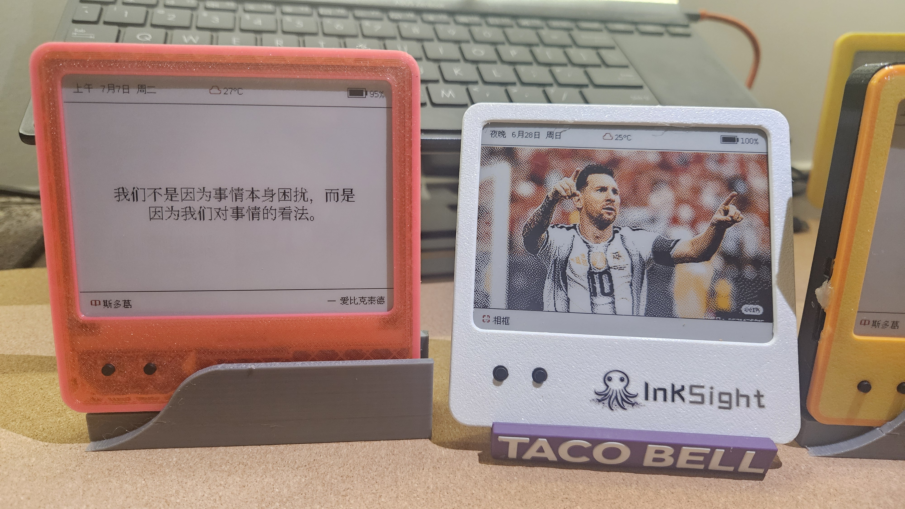
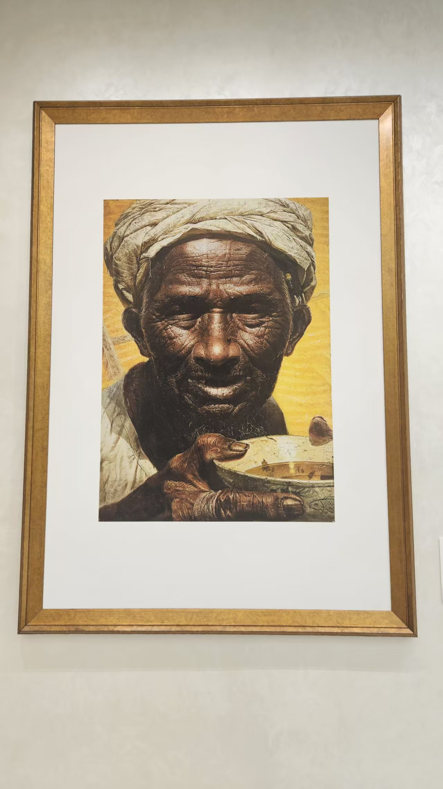
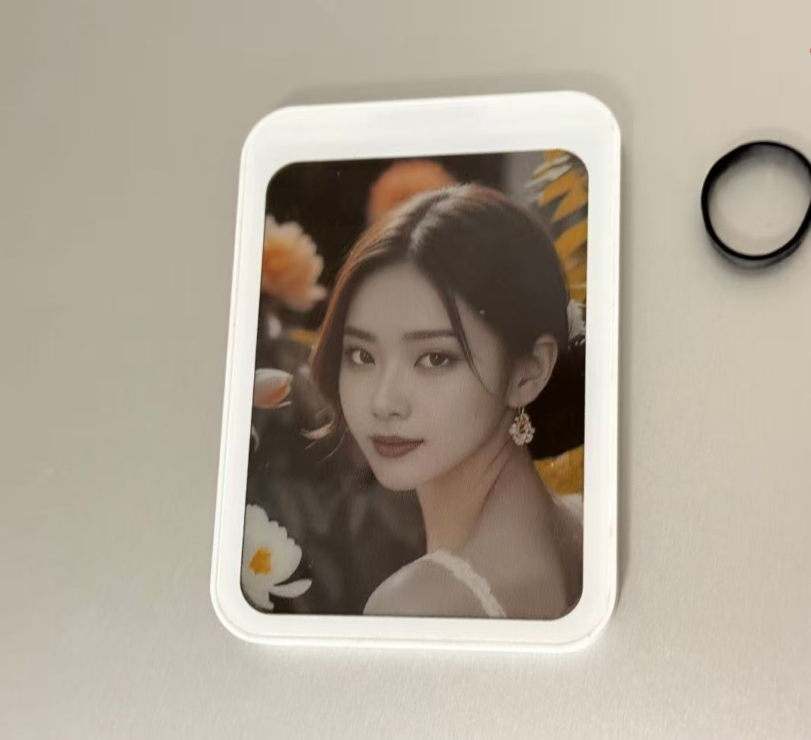
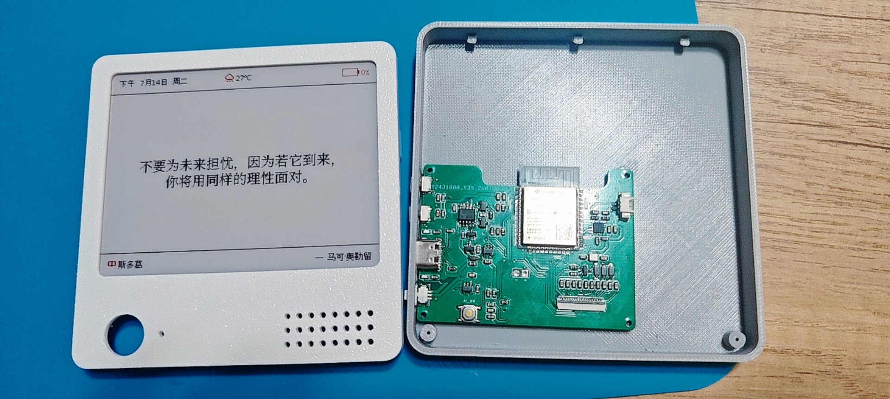

AI E-INK · ALWAYS ON
Let living content stay quietly in sight.
Senqiong Xiaowu brings generative AI to electronic paper. Photos, schedules, data and ideas remain naturally visible—without keeping a bright screen on.
Final specifications may vary by production model, development version and custom solution.
ALWAYS IN SIGHT
Refresh once.
Stay for longer.
E-ink consumes power only when refreshing, while the image remains visible even without power. Move essential information away from glowing screens and bring calm back to the desk.
Information at a glance
Schedules, weather, markets, photos and reminders remain visible without reaching for your phone.
Content that keeps growing
Update over Wi-Fi, Bluetooth or NFC and let one display carry endlessly changing content.
Technology that stays quiet
No flicker, minimal blue light and ultra-low power—an experience that feels like paper.
01 · PRODUCT FAMILY
A place for
every size.
From battery-free wearable tags and connected desk displays to dual-screen AI terminals, our range supports personal, home and commercial applications.
02 · LIVING WITH E-INK
Technology that fits life,
without interrupting it.

HOME
Full-color digital album
Keep memories and artwork on display—even without power.

NFC
Wearable tags and home labels

AI DESK
AI desk companion
03 · OPEN HARDWARE
From an idea
to a working display.
Built on the open ESP32 ecosystem with support for Arduino, ESP-IDF and PlatformIO—from rapid prototypes to production customization.

MAIN CONTROLLERESP32
Wi-Fi · BLE · OTA- DISPLAY
- Multiple e-paper sizes
- CONTENT
- AI cloud delivery
- EXPANSION
- Voice / TF / NFC
SENQIONG XIAOWU
Make every refresh
worth keeping.
Contact us for product information, samples, volume orders and custom hardware or software solutions.
View all products